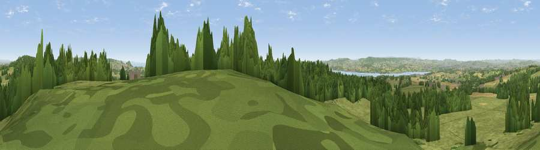

Viewpoint near Woodbury
#5873 in England · top 11% of its area beats it · near WoodburyWhere it is
The exact computed spot (SY 02625 85425). Click the marker for map links.
The view, rendered

A 360° render of this exact spot computed from the terrain model, tree cover and land cover — summer colours, afternoon light, calibrated against photographs of famous viewpoints. Real trees, hedges and buildings will differ in detail.
The panorama
Grey silhouette: terrain skyline in each direction (720 bearings, Earth curvature and refraction included). Dashed green: skyline with trees (+15 m) and buildings (+8 m) as obstacles. Blue strip: how far the ground is visible on each bearing.
Where the view opens
Wedge length = distance to the farthest visible ground on that bearing (vegetation-aware). Rings at 10, 25 and 50 km.
What fills the view
54% grassland · 31% woodland · 8% cropland · 6% water · 2% built-up
Angular shares of the visible panorama (visual magnitude), not map area. Landscape diversity 0.49 (0–1 Shannon).
Key numbers
More beautiful places nearby
The staircase of upgrades: each row has a higher view potential than everything closer. Driving times are estimates from straight-line distance, calibrated against real road routing — check an actual route before setting out.
| Place | Direction | Drive | Score |
|---|---|---|---|
| Viewpoint near Woodbury | NNE · 2 km | ~6 min | 72.2 |
| Viewpoint near Knowle | SSE · 5 km | ~10 min | 81.9 |
| Viewpoint near Colaton Raleigh | ENE · 7 km | ~15 min | 82.1 |
| High Peak | E · 8 km | ~16 min | 85.3 |
| Golden Cap | E · 39 km | ~58 min | 88.7 |
| The Knoll | E · 51 km | ~72 min | 91.0 |
50.66033, -3.37902 · source: screening · position refined by local search. Computed location — check access rights before visiting.